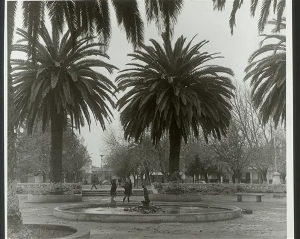

🔍
🎬 2 Videos + 15 Fotos

Don Chanca
Leyenda del Rodeo Chileno
🎬 2 Videos + 13 Fotos

Locales Comerciales Históricos
El comercio de antaño en Parral
🎬 5 Videos + 13 Fotos

Vida Rural
Identidad agrícola y trabajo del campo
🎬 3 Videos + 10 Fotos

Vehículos Históricos
Autos y transporte de antaño
🎬 Video + 9 Fotos

Historia del Ferrocarril
Trenes, estación y ramal Parral-Cauquenes
🎬 Video + 7 Fotos

Termas de Catillo
Las históricas aguas termales de la zona
🎬 Video + 6 Fotos

Procesiones y Ceremonias
Fe, despedidas y tradición comunitaria
🎬 Video + 6 Fotos

Italianos en Parral
La Colonia Italiana de San Manuel
🎬 Video + 5 Fotos

Avenida Principal
La columna vertebral de Parral
🏠 🎬 Video + 8 Fotos

Casas Antiguas
Arquitectura de otro tiempo
🎬 Video + 4 Fotos

Inundación de 1965
La gran crecida del río Perquilauquén
🎬 Video + 4 Fotos

Colonia Dignidad
Un capítulo oscuro de nuestra historia
🎬 2 Videos + 2 Fotos

Bajada Buenos Aires
Vistas históricas de la avenida
🎬 Video + 2 Fotos
Bomberos de Parral
Héroes del Fuego
🎬 Video + 5 Fotos

Hospital
Historia de la salud pública
🎬 Video + 4 Fotos

Colegios de Parral
Historia Educativa
🏛️ 2 Fotos

Plaza de Armas
El Corazón Cívico
🥖 6 Fotos

Ferias y Mercado
Sabores y Tradición de nuestra tierra
🎬 Video + 4 Fotos

Templo San Francisco
Antes del terremoto del 39
🎬 Video + 5 Fotos

Templo San José
Antes del terremoto del 39
🛤️ 2 Fotos

Ruta Parral-Cauquenes
El camino entre dos pueblos


{kind=link}
{kind=link}
{kind=link}
{kind=link}
{kind=link}
{kind=link}
{kind=link}
{kind=link}
{kind=link}
{kind=link}
{kind=link}
{kind=link}
{kind=link}
{kind=link}
{kind=link}
{kind=link}
{kind=link}
{kind=link}
{kind=link}